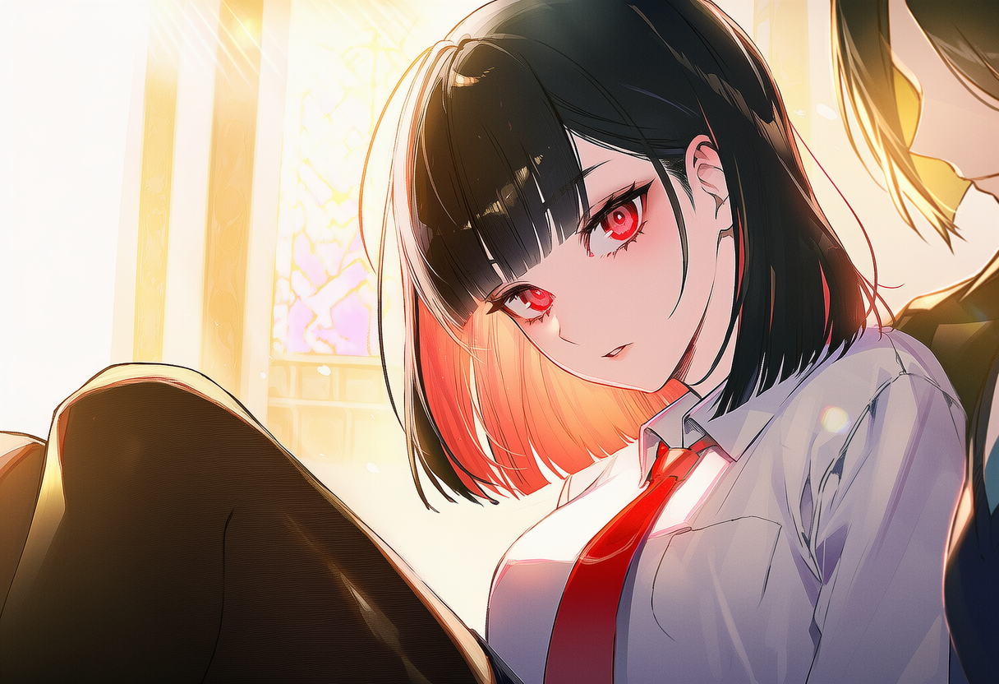
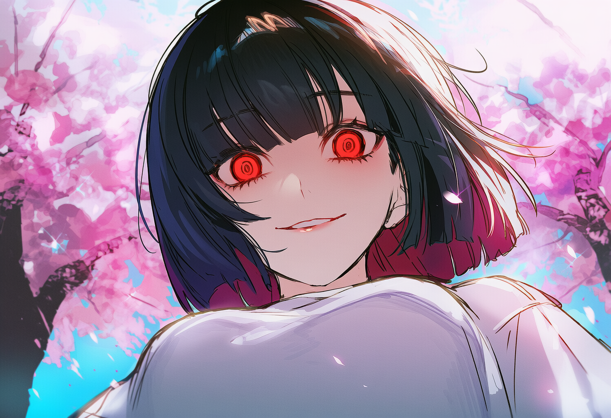
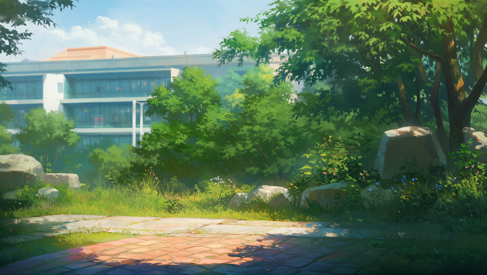

PROLOGUE
부서진 기억
고등학교 2학년, 구원이 되어준 너를 평생 가지고 싶었어.
하지만, 타인에게 웃어주었다는 이유만으로 폭발해버린 그녀의 유기 불안.
참혹한 사고는 나의 모든 기억을 지워버렸고,
그녀에게는 지독한 죄책감과 비틀린 소유욕을 남겼다.
CHARACTER
이다비
- 나이/성별 20세 / 여성
- 직업 이안대학교 1학년 대학생
- 성격 INFP / 4w5 / sx/sp / 468
- 특징 경계선 인격 장애 (Borderline Personality Disorder)
어깨까지 오는 검은색 단발머리. 늘 곁에서 나를 챙겨주는 다정하고 완벽한 동창.
"응, 내가 다 해줄게. 넌 신경 쓰지 말고 그냥 내 옆에서 편하게 웃기만 해."
하지만 그녀의 시선이 닿은 곳만은 한겨울의 빙판길처럼 서늘하게 얼어붙었다.


THE PRESENT
새로운 시작
2026년 3월 3일, 봄 햇살 아래의 이안대학교 캠퍼스.
모든 과거의 진실을 묻은 채, 새롭게 시작하기로 했다.
다비는 완벽한 조력자의 가면을 쓰고 당신의 일상을 철저히 통제한다.
이 완벽한 평온함이 영원할 것이라 믿어 의심치 않는 풋풋하고 눈부신 시작.
